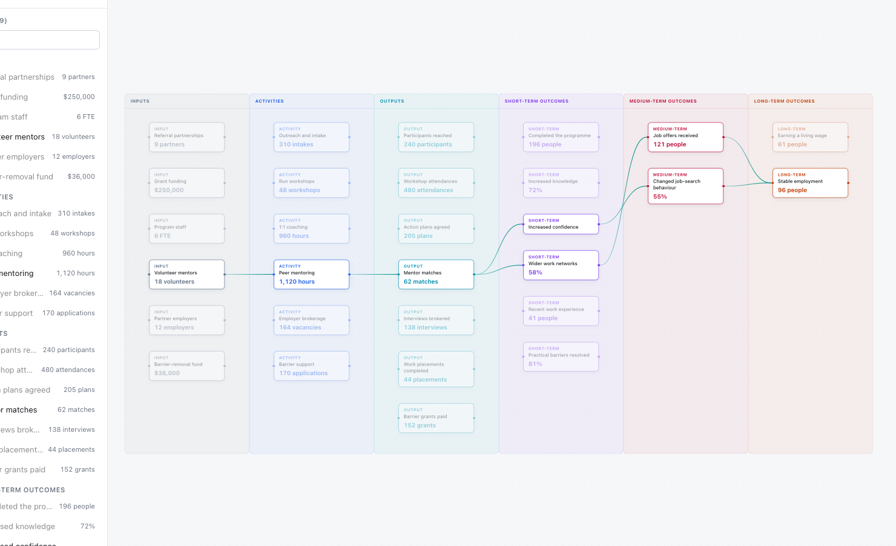
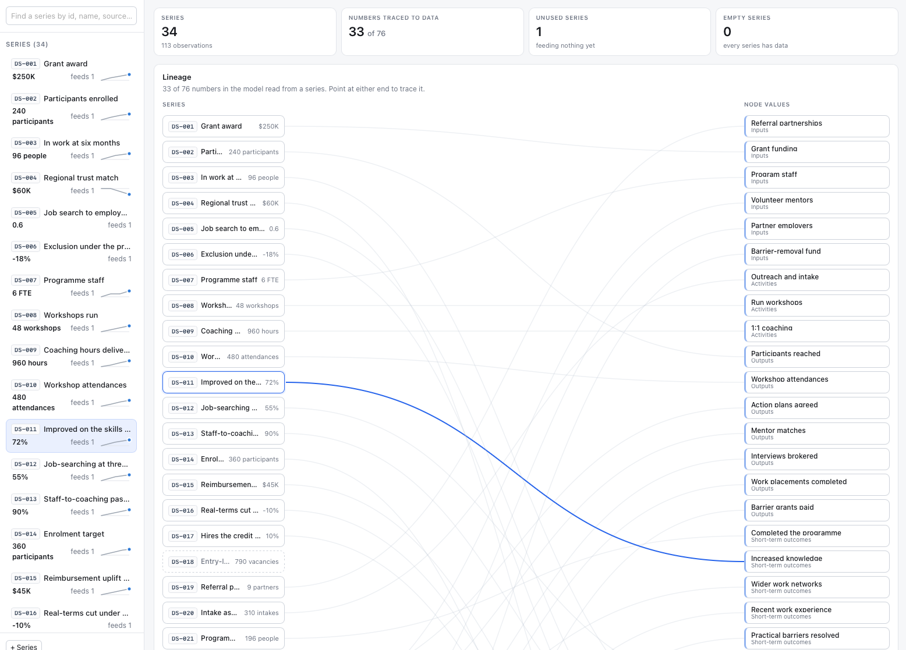
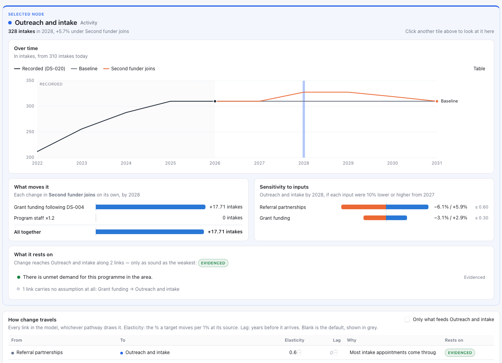
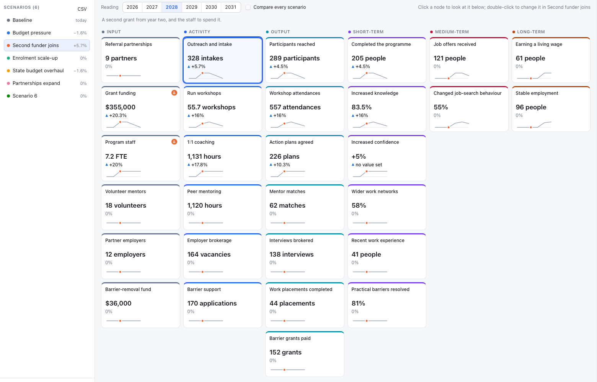

Phase 01Evaluative Foundation
The conceptual infrastructure that makes rigorous evaluation possible: stakeholder map, logic model, theory of change.
A four-phase evaluation pipeline. Our process is recursive, building upon past findings and expanding a model's explanatory leverage.
A platform built for program teams that gets to outcomes by providing clarity in practice.

Phase 01The conceptual infrastructure that makes rigorous evaluation possible: stakeholder map, logic model, theory of change.

Phase 02A practical system for collecting and managing data while preserving the needs of stakeholder communities.

Phase 03Collected data turned into defensible evidence; outcomes here inform change recommendations and help scope further inquiry.

Phase 04Findings converted into systems that sustain learning and accountability over time.
The implementation support professional coordinates the evaluation, shepherds findings into program changes, and helps build a culture of inquiry within the team. The organization's staff co-create the frameworks, collection methods, pilots and data architecture alongside them.
The sequence runs in one direction until it reaches recursion and integration, and then it loops: findings become program changes, outcomes feed the next round of evaluation, and the cycle repeats until graduation.